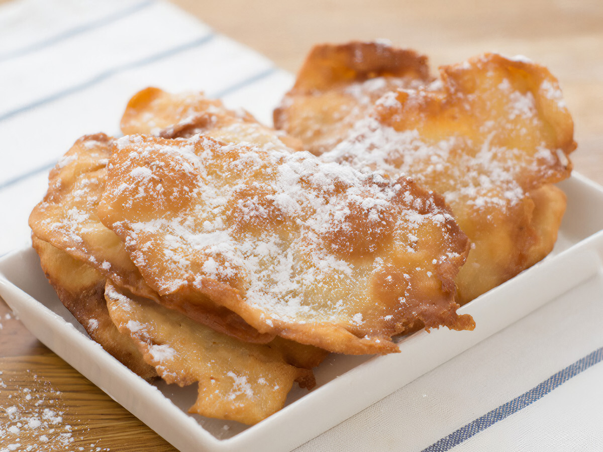

Orejas de Carnaval

Las orejas de Carnaval son un dulce típico gallego, elaboradas con una masa fina y frita en forma de oreja.
Las orejas de Carnaval son un postre tradicional de Galicia, especialmente popular durante las celebraciones del Entroido (Carnaval). Se preparan con una masa simple de harina, huevos, manteca y un toque de anís, que se estira muy fina y se fríe hasta quedar crujiente.
Una vez fritas, se espolvorean con azúcar y a veces con canela. Estas delicias doradas son crujientes, ligeras y con un sabor inconfundible que forma parte de la identidad gastronómica gallega.
Ingredientes:
- 500 g de harina de trigo
- 2 huevos
- 100 ml de leche
- 50 g de manteca de cerdo
- 30 ml de anís (licor)
- Una pizca de sal
Pasos:
- En un bol grande, mezcla los huevos, la leche, el anís y la manteca derretida.
- Añade la harina y la sal poco a poco hasta obtener una masa homogénea.
- Amasa durante unos minutos y deja reposar la masa cubierta durante 30 minutos.
- Toma porciones de masa y estíralas muy finas con un rodillo, dándoles forma irregular.
- Fríe las orejas en abundante aceite caliente hasta que estén doradas y crujientes.
- Escúrrelas sobre papel absorbente.
- Espolvorea con azúcar y canela al gusto.
- Repite el proceso hasta agotar toda la masa.
- Sírvelas frías como postre o merienda tradicional del Carnaval.
Home